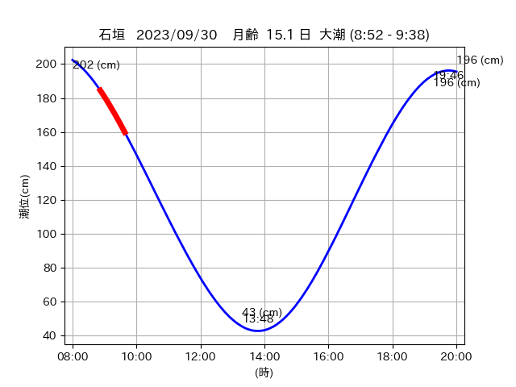

<!DOCTYPE html>
<html>
<head>
    
    <meta http-equiv="content-type" content="text/html; charset=UTF-8" />
    
        <script>
            L_NO_TOUCH = false;
            L_DISABLE_3D = false;
        </script>
    
    <style>html, body {width: 100%;height: 100%;margin: 0;padding: 0;}</style>
    <style>#map {position:absolute;top:0;bottom:0;right:0;left:0;}</style>
    <script src="https://cdn.jsdelivr.net/npm/leaflet@1.9.3/dist/leaflet.js"></script>
    <script src="https://code.jquery.com/jquery-3.7.1.min.js"></script>
    <script src="https://cdn.jsdelivr.net/npm/bootstrap@5.2.2/dist/js/bootstrap.bundle.min.js"></script>
    <script src="https://cdnjs.cloudflare.com/ajax/libs/Leaflet.awesome-markers/2.0.2/leaflet.awesome-markers.js"></script>
    <link rel="stylesheet" href="https://cdn.jsdelivr.net/npm/leaflet@1.9.3/dist/leaflet.css"/>
    <link rel="stylesheet" href="https://cdn.jsdelivr.net/npm/bootstrap@5.2.2/dist/css/bootstrap.min.css"/>
    <link rel="stylesheet" href="https://netdna.bootstrapcdn.com/bootstrap/3.0.0/css/bootstrap-glyphicons.css"/>
    <link rel="stylesheet" href="https://cdn.jsdelivr.net/npm/@fortawesome/fontawesome-free@6.2.0/css/all.min.css"/>
    <link rel="stylesheet" href="https://cdnjs.cloudflare.com/ajax/libs/Leaflet.awesome-markers/2.0.2/leaflet.awesome-markers.css"/>
    <link rel="stylesheet" href="https://cdn.jsdelivr.net/gh/python-visualization/folium/folium/templates/leaflet.awesome.rotate.min.css"/>
    
            <meta name="viewport" content="width=device-width,
                initial-scale=1.0, maximum-scale=1.0, user-scalable=no" />
            <style>
                #map_17a76b1e7bce47f35f4b85f1696a7088 {
                    position: relative;
                    width: 2048.0px;
                    height: 1600.0px;
                    left: 0.0%;
                    top: 0.0%;
                }
                .leaflet-container { font-size: 1rem; }
            </style>
        
</head>
<body>
    
    
            <div class="folium-map" id="map_17a76b1e7bce47f35f4b85f1696a7088" ></div>
        
</body>
<script>
    
    
            var map_17a76b1e7bce47f35f4b85f1696a7088 = L.map(
                "map_17a76b1e7bce47f35f4b85f1696a7088",
                {
                    center: [24.305, 124.169],
                    crs: L.CRS.EPSG3857,
                    ...{
  "zoom": 12,
  "zoomControl": true,
  "preferCanvas": false,
}

                }
            );

            

        
    
            var tile_layer_a4cf2cb557e5fb3980ba488617cf512d = L.tileLayer(
                "https://cyberjapandata.gsi.go.jp/xyz/seamlessphoto/{z}/{x}/{y}.jpg",
                {
  "minZoom": 0,
  "maxZoom": 18,
  "maxNativeZoom": 18,
  "noWrap": false,
  "attribution": "\u5730\u7406\u9662\u5730\u56f3",
  "subdomains": "abc",
  "detectRetina": false,
  "tms": false,
  "opacity": 1,
}

            );
        
    
            tile_layer_a4cf2cb557e5fb3980ba488617cf512d.addTo(map_17a76b1e7bce47f35f4b85f1696a7088);
        
    
            var marker_d76dd9105dd6abeb7201f35d2a7ce7dc = L.marker(
                [24.3358, 124.2377],
                {
}
            ).addTo(map_17a76b1e7bce47f35f4b85f1696a7088);
        
    
            var icon_9837e05668d12f22ea99c51f14b12419 = L.AwesomeMarkers.icon(
                {
  "markerColor": "orange",
  "iconColor": "white",
  "icon": "info-sign",
  "prefix": "glyphicon",
  "extraClasses": "fa-rotate-0",
}
            );
        
    
        var popup_a2d0b3958fbd366208482f19f3273363 = L.popup({
  "maxWidth": "100%",
});

        
            
                var html_feebd0648bc1e80a76c00f311e09ef6d = $(`<div id="html_feebd0648bc1e80a76c00f311e09ef6d" style="width: 100.0%; height: 100.0%;"><table><tr><td></td></tr><tr><td><center>20230930 No.1 </center></table></td></tr></table</div>`)[0];
                popup_a2d0b3958fbd366208482f19f3273363.setContent(html_feebd0648bc1e80a76c00f311e09ef6d);
            
        

        marker_d76dd9105dd6abeb7201f35d2a7ce7dc.bindPopup(popup_a2d0b3958fbd366208482f19f3273363)
        ;

        
    
    
                marker_d76dd9105dd6abeb7201f35d2a7ce7dc.setIcon(icon_9837e05668d12f22ea99c51f14b12419);
            
    
            var poly_line_a0118cd10adec7b36e788c0ea790f516 = L.polyline(
                [[24.3358, 124.2377], [24.335, 124.2419]],
                {"bubblingMouseEvents": true, "color": "#00FFFF", "dashArray": null, "dashOffset": null, "fill": false, "fillColor": "#00FFFF", "fillOpacity": 0.2, "fillRule": "evenodd", "lineCap": "round", "lineJoin": "round", "noClip": false, "opacity": 1.0, "smoothFactor": 1.0, "stroke": true, "weight": 3}
            ).addTo(map_17a76b1e7bce47f35f4b85f1696a7088);
        
    
            var marker_d47d13642dd5faaf14813acf18872a6b = L.marker(
                [24.2718, 124.1578],
                {
}
            ).addTo(map_17a76b1e7bce47f35f4b85f1696a7088);
        
    
            var icon_8ca2e79226481ae1f5c8dade6e5c71df = L.AwesomeMarkers.icon(
                {
  "markerColor": "orange",
  "iconColor": "white",
  "icon": "info-sign",
  "prefix": "glyphicon",
  "extraClasses": "fa-rotate-0",
}
            );
        
    
        var popup_7e24c9a8e55792dc28c15e06c3a315dc = L.popup({
  "maxWidth": "100%",
});

        
            
                var html_204555e092e98d860e2303565066b296 = $(`<div id="html_204555e092e98d860e2303565066b296" style="width: 100.0%; height: 100.0%;"><table><tr><td></td></tr><tr><td><center>20230930 No.2 </center></table></td></tr></table</div>`)[0];
                popup_7e24c9a8e55792dc28c15e06c3a315dc.setContent(html_204555e092e98d860e2303565066b296);
            
        

        marker_d47d13642dd5faaf14813acf18872a6b.bindPopup(popup_7e24c9a8e55792dc28c15e06c3a315dc)
        ;

        
    
    
                marker_d47d13642dd5faaf14813acf18872a6b.setIcon(icon_8ca2e79226481ae1f5c8dade6e5c71df);
            
    
            var poly_line_613796c10035d064a137190da1a721a5 = L.polyline(
                [[24.2718, 124.1578], [24.2745, 124.1573]],
                {"bubblingMouseEvents": true, "color": "#FF00FF", "dashArray": null, "dashOffset": null, "fill": false, "fillColor": "#FF00FF", "fillOpacity": 0.2, "fillRule": "evenodd", "lineCap": "round", "lineJoin": "round", "noClip": false, "opacity": 1.0, "smoothFactor": 1.0, "stroke": true, "weight": 3}
            ).addTo(map_17a76b1e7bce47f35f4b85f1696a7088);
        
    
            var marker_d7a304101eb1e0cb711cede4fd11320d = L.marker(
                [24.2994, 124.1689],
                {
}
            ).addTo(map_17a76b1e7bce47f35f4b85f1696a7088);
        
    
            var icon_0a7f1b796676e31011b57788e51557b9 = L.AwesomeMarkers.icon(
                {
  "markerColor": "orange",
  "iconColor": "white",
  "icon": "info-sign",
  "prefix": "glyphicon",
  "extraClasses": "fa-rotate-0",
}
            );
        
    
        var popup_4da960a5333a83c4d28c907e69c1caef = L.popup({
  "maxWidth": "100%",
});

        
            
                var html_8ff7489091d4328a7c0b7a94660f7bc1 = $(`<div id="html_8ff7489091d4328a7c0b7a94660f7bc1" style="width: 100.0%; height: 100.0%;"><table><tr><td></td></tr><tr><td><center>20230930 No.3 </center></table></td></tr></table</div>`)[0];
                popup_4da960a5333a83c4d28c907e69c1caef.setContent(html_8ff7489091d4328a7c0b7a94660f7bc1);
            
        

        marker_d7a304101eb1e0cb711cede4fd11320d.bindPopup(popup_4da960a5333a83c4d28c907e69c1caef)
        ;

        
    
    
                marker_d7a304101eb1e0cb711cede4fd11320d.setIcon(icon_0a7f1b796676e31011b57788e51557b9);
            
    
            var poly_line_ec4d28b4d8c5fb2f552455bfe55d84fd = L.polyline(
                [[24.2994, 124.1689], [24.2953, 124.1664]],
                {"bubblingMouseEvents": true, "color": "#00FFFF", "dashArray": null, "dashOffset": null, "fill": false, "fillColor": "#00FFFF", "fillOpacity": 0.2, "fillRule": "evenodd", "lineCap": "round", "lineJoin": "round", "noClip": false, "opacity": 1.0, "smoothFactor": 1.0, "stroke": true, "weight": 3}
            ).addTo(map_17a76b1e7bce47f35f4b85f1696a7088);
        
    
            var marker_e1a037696cd0c6ee1fa922019e724769 = L.marker(
                [24.3084, 124.1694],
                {
}
            ).addTo(map_17a76b1e7bce47f35f4b85f1696a7088);
        
    
            var icon_710b07dd6585c9ebea3d0b4d8f21219f = L.AwesomeMarkers.icon(
                {
  "markerColor": "orange",
  "iconColor": "white",
  "icon": "info-sign",
  "prefix": "glyphicon",
  "extraClasses": "fa-rotate-0",
}
            );
        
    
        var popup_5addbcc1d0975c30aa079f5d7e8b957a = L.popup({
  "maxWidth": "100%",
});

        
            
                var html_3503e92584cbfcabffdba4938333760e = $(`<div id="html_3503e92584cbfcabffdba4938333760e" style="width: 100.0%; height: 100.0%;"><table><tr><td></td></tr><tr><td><center>20230930 No.4 </center></table></td></tr></table</div>`)[0];
                popup_5addbcc1d0975c30aa079f5d7e8b957a.setContent(html_3503e92584cbfcabffdba4938333760e);
            
        

        marker_e1a037696cd0c6ee1fa922019e724769.bindPopup(popup_5addbcc1d0975c30aa079f5d7e8b957a)
        ;

        
    
    
                marker_e1a037696cd0c6ee1fa922019e724769.setIcon(icon_710b07dd6585c9ebea3d0b4d8f21219f);
            
    
            var poly_line_5be85a36e437de7d9cb12c399f0b5d38 = L.polyline(
                [[24.3084, 124.1694], [24.3019, 124.1694]],
                {"bubblingMouseEvents": true, "color": "#00FFFF", "dashArray": null, "dashOffset": null, "fill": false, "fillColor": "#00FFFF", "fillOpacity": 0.2, "fillRule": "evenodd", "lineCap": "round", "lineJoin": "round", "noClip": false, "opacity": 1.0, "smoothFactor": 1.0, "stroke": true, "weight": 3}
            ).addTo(map_17a76b1e7bce47f35f4b85f1696a7088);
        
</script>
</html>